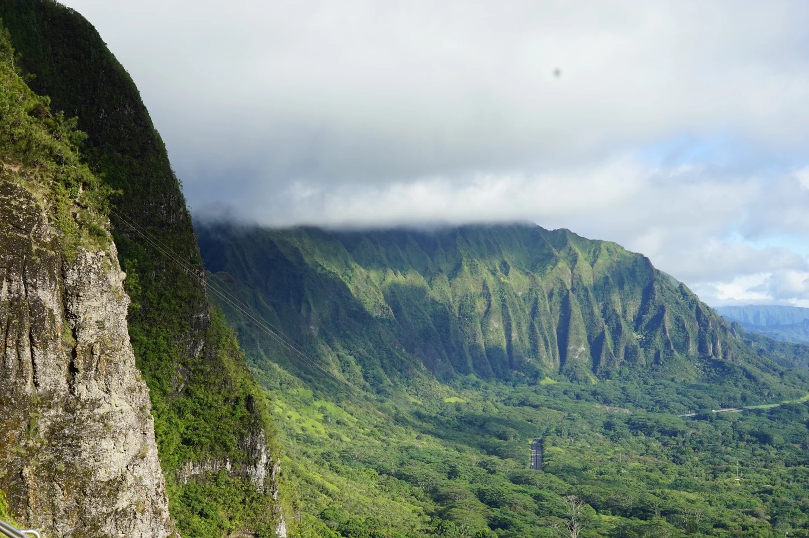
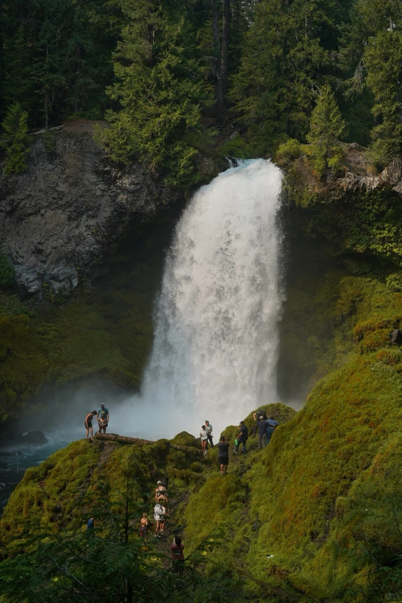
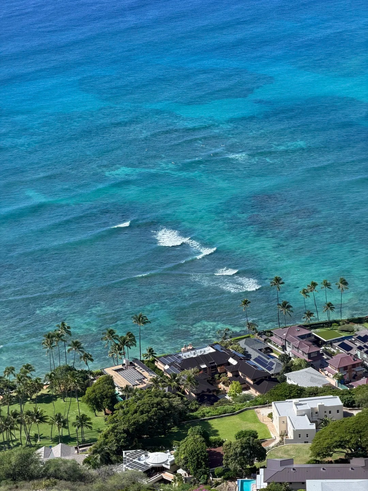
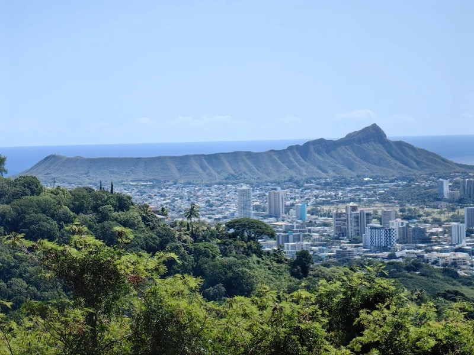

🏝️ 欧胡岛：侏罗纪与翡翠海岸
🏝️ Oʻahu: Jurassic Valley & Emerald Coast
Tantalus 日落 → Kualoa UTV → Lanikai 果冻海 → Manoa 雨林 → Diamond Head → Ala Moana
Tantalus Sunset → Kualoa UTV → Lanikai → Manoa Falls → Diamond Head → Ala Moana


Lanikai Pillbox Trail 🥾💎
Lanikai Pillbox Trail 🥾💎
短而美的山脊徒步，俯瞰果冻海般的 Lanikai 和双岛 Mokulua。山顶有两个二战碉堡（pillbox），绝佳拍照点。
Short ridge hike overlooking jelly-blue Lanikai and the Mokulua islands. Two WWII pillboxes at the top — iconic photo ops.

Nuʻuanu Pali Lookout 🌬️
Nuʻuanu Pali Lookout 🌬️
600米峭壁俯瞰整条 Windward Coast。从 Kailua 回城途中顺路，风吹过山口的呼啸声像夏威夷在跟你道别。
600m cliff over the Windward Coast. Quick stop on the way back from Kailua — wind roars through the pass like Hawaii saying goodbye.

Manoa Falls Trail 🌿💧
Manoa Falls Trail 🌿💧
侏罗纪公园般的雨林徒步，穿越巨型竹林和蕨类森林，终点是45米瀑布倾泻而下。檀香山后花园，轻松往返。
Jurassic rainforest trail through giant bamboo and fern groves, ending at a 150ft waterfall. Honolulu's backyard gem.


Tantalus Lookout (Puu Ualakaa) 🌇
Tantalus Lookout (Puu Ualakaa) 🌇
檀香山最佳城市观景台。Diamond Head 到 Waikiki 天际线尽收眼底，日落时分黄金光线染遍全程。本地人的秘密日落点。
Honolulu's best city viewpoint. Diamond Head to Waikiki skyline in one sweep. Golden hour here is pure magic. Local sunset secret.